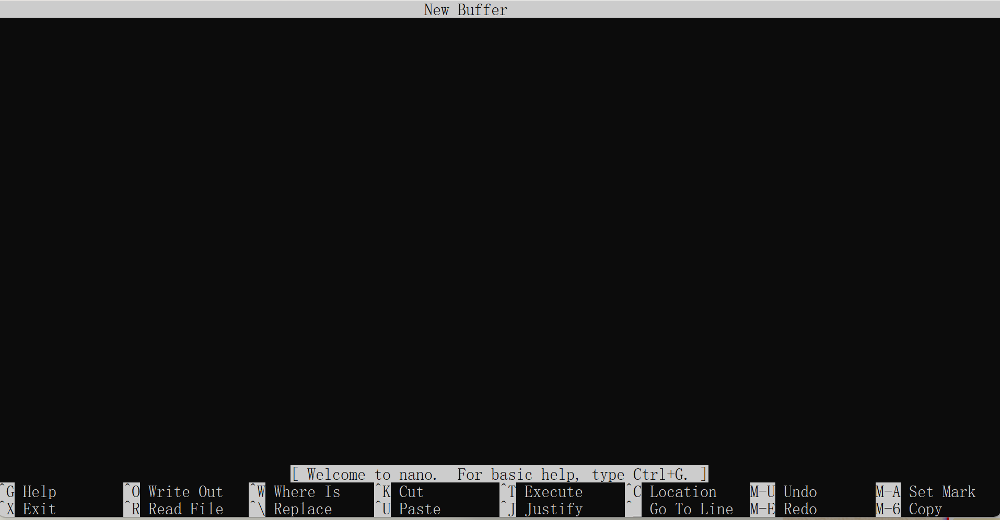

<!DOCTYPE html>


<html lang="zh-CN">
  

    <head>
      <meta charset="utf-8" />
        
      <meta name="description" content="Over top clear mind" />
      
      <meta
        name="viewport"
        content="width=device-width, initial-scale=1, maximum-scale=1"
      />
      <title>Vim &amp; Git Defualt Editor |  摸鱼且很菜blog</title>
  <meta name="generator" content="hexo-theme-ayer">
      
      <link rel="shortcut icon" href="/penhuolong.ico" />
       
<link rel="stylesheet" href="/dist/main.css">

      
<link rel="stylesheet" href="/css/fonts/remixicon.css">

      
<link rel="stylesheet" href="/css/custom.css">
 
      <script src="https://cdn.staticfile.org/pace/1.2.4/pace.min.js"></script>
       
 

      <link
        rel="stylesheet"
        href="https://cdn.jsdelivr.net/npm/@sweetalert2/theme-bulma@5.0.1/bulma.min.css"
      />
      <script src="https://cdn.jsdelivr.net/npm/sweetalert2@11.0.19/dist/sweetalert2.min.js"></script>

      <!-- mermaid -->
      
      <style>
        .swal2-styled.swal2-confirm {
          font-size: 1.6rem;
        }
      </style>
    </head>
  </html>
</html>


<body>
  <div id="app">
    
      <canvas class="fireworks"></canvas>
      <style>
        .fireworks {
          position: fixed;
          left: 0;
          top: 0;
          z-index: 99999;
          pointer-events: none;
        }
      </style>
      
      
    <main class="content on">
      <section class="outer">
  <article
  id="post-Vim-Git-Defualt-Editor"
  class="article article-type-post"
  itemscope
  itemprop="blogPost"
  data-scroll-reveal
>
  <div class="article-inner">
    
    <header class="article-header">
       
<h1 class="article-title sea-center" style="border-left:0" itemprop="name">
  Vim &amp; Git Defualt Editor
</h1>
 

      
    </header>
     
    <div class="article-meta">
      <a href="/2022/07/31/Vim-Git-Defualt-Editor/" class="article-date">
  <time datetime="2022-07-31T03:21:13.000Z" itemprop="datePublished">2022-07-31</time>
</a>   
<div class="word_count">
    <span class="post-time">
        <span class="post-meta-item-icon">
            <i class="ri-quill-pen-line"></i>
            <span class="post-meta-item-text"> 字数统计:</span>
            <span class="post-count">1.3k</span>
        </span>
    </span>

    <span class="post-time">
        &nbsp; | &nbsp;
        <span class="post-meta-item-icon">
            <i class="ri-book-open-line"></i>
            <span class="post-meta-item-text"> 阅读时长≈</span>
            <span class="post-count">5 分钟</span>
        </span>
    </span>
</div>
 
    </div>
      
    <div class="tocbot"></div>


  
    <div class="article-entry" itemprop="articleBody">
       
  <p>在这段时间使用Git，经常用 nano editor 。突然碰到了vim，就有点不知所措了。┗( T﹏T )┛</p>
<p>因为感觉nano 比vim 好用不止一点(●’◡’●)</p>
<p>基于目前需求，Debian + vscode 用nano比较舒适。但是win11上没找到nano editor，只好用vim ㄟ( ▔, ▔ )ㄏ</p>
<span id="more"></span>
<h1 id="Set-Git-Defualt-Editor"><a href="#Set-Git-Defualt-Editor" class="headerlink" title="Set Git Defualt Editor"></a>Set Git Defualt Editor</h1><figure class="highlight bash"><table><tr><td class="gutter"><pre><span class="line">1</span><br><span class="line">2</span><br></pre></td><td class="code"><pre><span class="line">git config --global core.editor nano</span><br><span class="line">git config --global core.editor vim</span><br></pre></td></tr></table></figure>
<p>然后查看Git config <code>git config --global --list</code></p>
<h2 id="Nano-Editor"><a href="#Nano-Editor" class="headerlink" title="Nano Editor"></a>Nano Editor</h2><p><strong>Install</strong></p>
<p>Ubuntu / Debian：</p>
<figure class="highlight plaintext"><table><tr><td class="gutter"><pre><span class="line">1</span><br></pre></td><td class="code"><pre><span class="line">apt-get install nano -y</span><br></pre></td></tr></table></figure>
<p>CentOS / Fedora：</p>
<figure class="highlight plaintext"><table><tr><td class="gutter"><pre><span class="line">1</span><br></pre></td><td class="code"><pre><span class="line">yum -y install nano</span><br></pre></td></tr></table></figure>
<p>安装完成之后就可以使用。</p>
<ul>
<li><code>^</code> = <code>Ctrl</code>，比如 <code>^G</code> 就是按 <code>Ctrl</code> + <code>G</code> 键。</li>
<li><code>M</code> = <code>Alt</code>，比如 <code>M-E</code> 就是按 <code>Alt</code> + <code>E</code> 键。此外，对于 Mac 用户来说，<code>M</code> = <code>Esc</code>。</li>
</ul>
<p></p>
<p><strong>与<code>vi</code>不同，在输入文本之前无需进入编辑模式; 您可以在窗口打开后立即开始输入。</strong></p>
<h3 id="create-and-open-file"><a href="#create-and-open-file" class="headerlink" title="create and open file"></a>create and open file</h3><p><strong>create new file</strong></p>
<p>不带参数，直接运行<code>nano</code>就会直接创建一个空白文件：</p>
<figure class="highlight javascript"><table><tr><td class="gutter"><pre><span class="line">1</span><br></pre></td><td class="code"><pre><span class="line">nano</span><br></pre></td></tr></table></figure>
<p>如果进行更改并保存文件，系统将提示您添加文件名。</p>
<p><strong>打开文件</strong></p>
<p>要打开文件，直接在<code>nano</code>后面添加文件的名字：</p>
<figure class="highlight javascript"><table><tr><td class="gutter"><pre><span class="line">1</span><br></pre></td><td class="code"><pre><span class="line">nano ~<span class="regexp">/public_html/i</span>ndex.html</span><br></pre></td></tr></table></figure>
<p>如果<code>~/public_html</code>目录中存在<code>index.html</code>，nano将打开它。如果该文件不存在，<code>nano</code>将创建它。</p>
<p>您还可以打开特定行或列的文件：</p>
<figure class="highlight javascript"><table><tr><td class="gutter"><pre><span class="line">1</span><br><span class="line">2</span><br></pre></td><td class="code"><pre><span class="line">nano +LINE /path/to/file</span><br><span class="line">nano +LINE,COLUMN /path/to/file</span><br></pre></td></tr></table></figure>
<p>以只读方式打开文件：</p>
<figure class="highlight javascript"><table><tr><td class="gutter"><pre><span class="line">1</span><br></pre></td><td class="code"><pre><span class="line">nano -v myfile</span><br></pre></td></tr></table></figure>
<h3 id="Open-Configuration-Files-Using-Nano"><a href="#Open-Configuration-Files-Using-Nano" class="headerlink" title="Open Configuration Files Using Nano"></a><strong>Open Configuration Files Using Nano</strong></h3><p>编辑用于配置应用程序或系统实用程序的文件时，请使用<code>-w</code>标志启动nano ：</p>
<figure class="highlight javascript"><table><tr><td class="gutter"><pre><span class="line">1</span><br></pre></td><td class="code"><pre><span class="line">nano -w /etc/mysql/my.cnf</span><br></pre></td></tr></table></figure>
<ul>
<li><p>有些文件中有长度很长的行，<code>-w</code>标志可以防止这些长行，因为长度太长了而不会在屏幕上显示出来。</p>
</li>
<li><p>与<code>vi</code>不同，在输入文本之前无需进入编辑模式; 您可以在窗口打开后立即开始输入。使用箭头键移动光标。可用命令的部分菜单显示在终端窗口的底部。</p>
</li>
</ul>
<h3 id="Edit-Files-Using-Nano-Text-Editor-in-Linux"><a href="#Edit-Files-Using-Nano-Text-Editor-in-Linux" class="headerlink" title="Edit Files Using Nano Text Editor in Linux"></a>Edit Files Using Nano Text Editor in Linux</h3><p><strong>Cut and Paste Lines of Text Using Nano</strong></p>
<p>要剪切一行文字，请使用<code>^K</code>。要粘贴，请将光标移动到要放置文本的位置并使用<code>^U</code>。如果要剪切多行，请逐一剪切。全部剪切完后，再使用<code>^U</code>，就能全部粘贴回来，不用担心上一个剪切被覆盖。</p>
<p><strong>search text</strong></p>
<p>要搜索文档中的文本，请使用<code>^W</code>。这将打开搜索提示和搜索相关命令的子菜单。</p>
<figure class="highlight javascript"><table><tr><td class="gutter"><pre><span class="line">1</span><br><span class="line">2</span><br></pre></td><td class="code"><pre><span class="line">^G Get Help         ^Y First Line       ^T Go To Line       ^W Beg <span class="keyword">of</span> Par       M-J FullJstify      M-B Backwards</span><br><span class="line">^C Cancel           ^V Last Line        ^R Replace          ^O End <span class="keyword">of</span> Par       M-C Case Sens       M-R Regexp</span><br></pre></td></tr></table></figure>
<p><strong>正则表达式搜索</strong></p>
<p>要使用正则表达式搜索文本，请在搜索菜单中按<code>ALT</code>+ <code>R</code>（在Mac上为<code>ESC</code>+ <code>R</code>），然后在提示符中输入正则表达式。</p>
<p><strong>go to line number</strong></p>
<p>要转到行号，按完<code>^T</code>，在提示中输入并输入要导航到的行号。</p>
<p><strong>Find and Replace Text</strong></p>
<p>在搜索菜单中，按<code>^R</code>。输入要替换的文本，然后按<code>Enter</code>键，然后输入替换文本。系统将提示您确认找到的每个实例的替换，或选择<strong>ALL</strong>全部替换。</p>
<p><strong>spell check</strong></p>
<p><code>Nano</code>具有内置的拼写检查功能，但您需要安装<code>spell</code>软件包：</p>
<p><strong>Debian / Ubuntu</strong>：</p>
<figure class="highlight javascript"><table><tr><td class="gutter"><pre><span class="line">1</span><br></pre></td><td class="code"><pre><span class="line">apt install spell</span><br></pre></td></tr></table></figure>
<p>复制</p>
<p><strong>CentOS / Fedora</strong>：</p>
<figure class="highlight javascript"><table><tr><td class="gutter"><pre><span class="line">1</span><br></pre></td><td class="code"><pre><span class="line">yum install spell</span><br></pre></td></tr></table></figure>
<p>复制</p>
<p>安装完成<code>spell</code>后，您可以在编辑文件时按下<code>^T</code>使用拼写检查功能。</p>
<p><strong>save work</strong></p>
<p>要保存您的工作，请使用<code>^O</code>或“<code>WriteOut</code>”。这将保存文档，然后您就可以继续工作。</p>
<p><strong>save with backup</strong></p>
<p>退出时，<code>Nano</code>可以创建文件备份。这些备份可以放在您选择的目录中，默认情况下，它们与修改后的文件放在同一目录中。</p>
<p>在启动<code>nano</code>时使用<code>-B</code>选项将为您创建文件的备份，而使用<code>-C</code>选项将允许您指定将备份文件放在的目录：</p>
<figure class="highlight javascript"><table><tr><td class="gutter"><pre><span class="line">1</span><br></pre></td><td class="code"><pre><span class="line">nano -BC ~/backups index.php</span><br></pre></td></tr></table></figure>
<p>复制</p>
<p>上面列出的命令将在当前用户主目录<code>index.php</code>的<code>backups</code>文件夹中创建备份副本。</p>
<h3 id="exit-nano"><a href="#exit-nano" class="headerlink" title="exit nano"></a>exit nano</h3><p>使用<code>^X</code>退出<code>nano</code>。如果您尚未保存工作，系统将提示您保存更改或取消退出。</p>
<h2 id="Vim-Editor"><a href="#Vim-Editor" class="headerlink" title="Vim Editor"></a>Vim Editor</h2><h3 id="命令模式与编辑模式"><a href="#命令模式与编辑模式" class="headerlink" title="命令模式与编辑模式"></a>命令模式与编辑模式</h3><ol>
<li>命令模式：接受、执行 vi操作命令的模式，打开文件后的默认模式；</li>
<li>编辑模式：对打开的文件内容进行 增、删、改 操作的模式；</li>
</ol>
<blockquote>
<p>在编辑模式下按下ESC键，回退到命令模式。</p>
<p>键盘输入字母<code>i</code>或<code>Insert</code>键进入最常用的插入编辑模式。</p>
</blockquote>
<p><strong>创建、打开文件：<code>$ vi [filename]</code></strong></p>
<ul>
<li>如果文件存在则打开现有文件，如果文件不存在则新建文件，并在终端最下面一行显示打开的是一个新文件。</li>
</ul>
<p><strong>保存文件</strong></p>
<p>基本步骤：</p>
<ul>
<li><p>在插入编辑模式下编辑文件。</p>
</li>
<li><p>按下<code>ESC</code>键，退出编辑模式，切换到命令模式。</p>
</li>
<li><p>保存并退出：在命令模式下键入<code>ZZ</code>或者<code>:wq</code></p>
</li>
<li>如果只想保存文件，则键入<code>:w</code>，回车后底行会提示写入操作结果，并保持停留在命令模式。</li>
</ul>
<p><strong>放弃所有文件修改</strong></p>
<p>放弃所有文件修改 并 退出vim:</p>
<ul>
<li>按下<code>ESC</code>键进入命令模式，键入<code>:q!</code>回车后放弃修改并退出<code>vim</code></li>
</ul>
<p>放弃所有文件修改，但不退出 <code>vi</code>：</p>
<ul>
<li>按下<code>ESC</code>键进入命令模式，键入<code>:e!</code>，回车后回到命令模式</li>
</ul>
 
      <!-- reward -->
      
    </div>
    

    <!-- copyright -->
    
    <div class="declare">
      <ul class="post-copyright">
        <li>
          <i class="ri-copyright-line"></i>
          <strong>版权声明： </strong>
          
          本博客所有文章除特别声明外，著作权归作者所有。转载请注明出处！
          
        </li>
      </ul>
    </div>
    
    <footer class="article-footer">
       
<div class="share-btn">
      <span class="share-sns share-outer">
        <i class="ri-share-forward-line"></i>
        分享
      </span>
      <div class="share-wrap">
        <i class="arrow"></i>
        <div class="share-icons">
          
          <a class="weibo share-sns" href="javascript:;" data-type="weibo">
            <i class="ri-weibo-fill"></i>
          </a>
          <a class="weixin share-sns wxFab" href="javascript:;" data-type="weixin">
            <i class="ri-wechat-fill"></i>
          </a>
          <a class="qq share-sns" href="javascript:;" data-type="qq">
            <i class="ri-qq-fill"></i>
          </a>
          <a class="douban share-sns" href="javascript:;" data-type="douban">
            <i class="ri-douban-line"></i>
          </a>
          <!-- <a class="qzone share-sns" href="javascript:;" data-type="qzone">
            <i class="icon icon-qzone"></i>
          </a> -->
          
          <a class="facebook share-sns" href="javascript:;" data-type="facebook">
            <i class="ri-facebook-circle-fill"></i>
          </a>
          <a class="twitter share-sns" href="javascript:;" data-type="twitter">
            <i class="ri-twitter-fill"></i>
          </a>
          <a class="google share-sns" href="javascript:;" data-type="google">
            <i class="ri-google-fill"></i>
          </a>
        </div>
      </div>
</div>

<div class="wx-share-modal">
    <a class="modal-close" href="javascript:;"><i class="ri-close-circle-line"></i></a>
    <p>扫一扫，分享到微信</p>
    <div class="wx-qrcode">
      
    </div>
</div>

<div id="share-mask"></div>  
  <ul class="article-tag-list" itemprop="keywords"><li class="article-tag-list-item"><a class="article-tag-list-link" href="/tags/Git/" rel="tag">Git</a></li></ul>

    </footer>
  </div>

   
  <nav class="article-nav">
    
      <a href="/2022/12/16/camera-calibration/" class="article-nav-link">
        <strong class="article-nav-caption">上一篇</strong>
        <div class="article-nav-title">
          
            camera calibration 相机标定
          
        </div>
      </a>
    
    
      <a href="/2022/07/17/ubuntu-%E5%8A%A8%E6%80%81%E5%88%86%E9%85%8DIP/" class="article-nav-link">
        <strong class="article-nav-caption">下一篇</strong>
        <div class="article-nav-title">ubuntu 动态分配IP</div>
      </a>
    
  </nav>

  
   
    
    <script src="https://cdn.staticfile.org/twikoo/1.4.18/twikoo.all.min.js"></script>
    <div id="twikoo" class="twikoo"></div>
    <script>
        twikoo.init({
            envId: ""
        })
    </script>
 
</article>

</section>
      <footer class="footer">
  <div class="outer">
    <ul>
      <li>
        Copyrights &copy;
        2020-2023
        <i class="ri-heart-fill heart_icon"></i> cyg
      </li>
    </ul>
    <ul>
      <li>
        
      </li>
    </ul>
    <ul>
      <li>
        
        
        <span>
  <span><i class="ri-user-3-fill"></i>访问人数:<span id="busuanzi_value_site_uv"></span></span>
  <span class="division">|</span>
  <span><i class="ri-eye-fill"></i>浏览次数:<span id="busuanzi_value_page_pv"></span></span>
</span>
        
      </li>
    </ul>
    <ul>
      
    </ul>
    <ul>
      
    </ul>
    <ul>
      <li>
        <!-- cnzz统计 -->
        
        <script type="text/javascript" src='https://s9.cnzz.com/z_stat.php?id=1278069914&amp;web_id=1278069914'></script>
        
      </li>
    </ul>
  </div>
</footer>    
    </main>
    <div class="float_btns">
      <div class="totop" id="totop">
  <i class="ri-arrow-up-line"></i>
</div>

<div class="todark" id="todark">
  <i class="ri-moon-line"></i>
</div>

    </div>
    <aside class="sidebar on">
      <button class="navbar-toggle"></button>
<nav class="navbar">
  
  <div class="logo">
    <a href="/"></a>
  </div>
  
  <ul class="nav nav-main">
    
    <li class="nav-item">
      <a class="nav-item-link" href="/">主页</a>
    </li>
    
    <li class="nav-item">
      <a class="nav-item-link" href="/archives">归档</a>
    </li>
    
    <li class="nav-item">
      <a class="nav-item-link" href="/tags">标签</a>
    </li>
    
    <li class="nav-item">
      <a class="nav-item-link" href="/friends">神秘链接</a>
    </li>
    
    <li class="nav-item">
      <a class="nav-item-link" href="/about">关于我</a>
    </li>
    
  </ul>
</nav>
<nav class="navbar navbar-bottom">
  <ul class="nav">
    <li class="nav-item">
      
      <a class="nav-item-link nav-item-search"  title="搜索">
        <i class="ri-search-line"></i>
      </a>
      
      
      <a class="nav-item-link" target="_blank" href="/atom.xml" title="RSS Feed">
        <i class="ri-rss-line"></i>
      </a>
      
    </li>
  </ul>
</nav>
<div class="search-form-wrap">
  <div class="local-search local-search-plugin">
  <input type="search" id="local-search-input" class="local-search-input" placeholder="Search...">
  <div id="local-search-result" class="local-search-result"></div>
</div>
</div>
    </aside>
    <div id="mask"></div>

<!-- #reward -->
<div id="reward">
  <span class="close"><i class="ri-close-line"></i></span>
  <p class="reward-p"><i class="ri-cup-line"></i></p>
  <div class="reward-box">
    
    
  </div>
</div>
    
<script src="/js/jquery-3.6.0.min.js"></script>
 
<script src="/js/lazyload.min.js"></script>

<!-- Tocbot -->
 
<script src="/js/tocbot.min.js"></script>

<script>
  tocbot.init({
    tocSelector: ".tocbot",
    contentSelector: ".article-entry",
    headingSelector: "h1, h2, h3, h4, h5, h6",
    hasInnerContainers: true,
    scrollSmooth: true,
    scrollContainer: "main",
    positionFixedSelector: ".tocbot",
    positionFixedClass: "is-position-fixed",
    fixedSidebarOffset: "auto",
  });
</script>

<script src="https://cdn.staticfile.org/jquery-modal/0.9.2/jquery.modal.min.js"></script>
<link
  rel="stylesheet"
  href="https://cdn.staticfile.org/jquery-modal/0.9.2/jquery.modal.min.css"
/>
<script src="https://cdn.staticfile.org/justifiedGallery/3.8.1/js/jquery.justifiedGallery.min.js"></script>

<script src="/dist/main.js"></script>

<!-- ImageViewer -->
 <!-- Root element of PhotoSwipe. Must have class pswp. -->
<div class="pswp" tabindex="-1" role="dialog" aria-hidden="true">

    <!-- Background of PhotoSwipe. 
         It's a separate element as animating opacity is faster than rgba(). -->
    <div class="pswp__bg"></div>

    <!-- Slides wrapper with overflow:hidden. -->
    <div class="pswp__scroll-wrap">

        <!-- Container that holds slides. 
            PhotoSwipe keeps only 3 of them in the DOM to save memory.
            Don't modify these 3 pswp__item elements, data is added later on. -->
        <div class="pswp__container">
            <div class="pswp__item"></div>
            <div class="pswp__item"></div>
            <div class="pswp__item"></div>
        </div>

        <!-- Default (PhotoSwipeUI_Default) interface on top of sliding area. Can be changed. -->
        <div class="pswp__ui pswp__ui--hidden">

            <div class="pswp__top-bar">

                <!--  Controls are self-explanatory. Order can be changed. -->

                <div class="pswp__counter"></div>

                <button class="pswp__button pswp__button--close" title="Close (Esc)"></button>

                <button class="pswp__button pswp__button--share" style="display:none" title="Share"></button>

                <button class="pswp__button pswp__button--fs" title="Toggle fullscreen"></button>

                <button class="pswp__button pswp__button--zoom" title="Zoom in/out"></button>

                <!-- Preloader demo http://codepen.io/dimsemenov/pen/yyBWoR -->
                <!-- element will get class pswp__preloader--active when preloader is running -->
                <div class="pswp__preloader">
                    <div class="pswp__preloader__icn">
                        <div class="pswp__preloader__cut">
                            <div class="pswp__preloader__donut"></div>
                        </div>
                    </div>
                </div>
            </div>

            <div class="pswp__share-modal pswp__share-modal--hidden pswp__single-tap">
                <div class="pswp__share-tooltip"></div>
            </div>

            <button class="pswp__button pswp__button--arrow--left" title="Previous (arrow left)">
            </button>

            <button class="pswp__button pswp__button--arrow--right" title="Next (arrow right)">
            </button>

            <div class="pswp__caption">
                <div class="pswp__caption__center"></div>
            </div>

        </div>

    </div>

</div>

<link rel="stylesheet" href="https://cdn.staticfile.org/photoswipe/4.1.3/photoswipe.min.css">
<link rel="stylesheet" href="https://cdn.staticfile.org/photoswipe/4.1.3/default-skin/default-skin.min.css">
<script src="https://cdn.staticfile.org/photoswipe/4.1.3/photoswipe.min.js"></script>
<script src="https://cdn.staticfile.org/photoswipe/4.1.3/photoswipe-ui-default.min.js"></script>

<script>
    function viewer_init() {
        let pswpElement = document.querySelectorAll('.pswp')[0];
        let $imgArr = document.querySelectorAll(('.article-entry img:not(.reward-img)'))

        $imgArr.forEach(($em, i) => {
            $em.onclick = () => {
                // slider展开状态
                // todo: 这样不好，后面改成状态
                if (document.querySelector('.left-col.show')) return
                let items = []
                $imgArr.forEach(($em2, i2) => {
                    let img = $em2.getAttribute('data-idx', i2)
                    let src = $em2.getAttribute('data-target') || $em2.getAttribute('src')
                    let title = $em2.getAttribute('alt')
                    // 获得原图尺寸
                    const image = new Image()
                    image.src = src
                    items.push({
                        src: src,
                        w: image.width || $em2.width,
                        h: image.height || $em2.height,
                        title: title
                    })
                })
                var gallery = new PhotoSwipe(pswpElement, PhotoSwipeUI_Default, items, {
                    index: parseInt(i)
                });
                gallery.init()
            }
        })
    }
    viewer_init()
</script> 
<!-- MathJax -->
 <script type="text/x-mathjax-config">
  MathJax.Hub.Config({
      tex2jax: {
          inlineMath: [ ['$','$'], ["\\(","\\)"]  ],
          processEscapes: true,
          skipTags: ['script', 'noscript', 'style', 'textarea', 'pre', 'code']
      }
  });

  MathJax.Hub.Queue(function() {
      var all = MathJax.Hub.getAllJax(), i;
      for(i=0; i < all.length; i += 1) {
          all[i].SourceElement().parentNode.className += ' has-jax';
      }
  });
</script>

<script src="https://cdn.staticfile.org/mathjax/2.7.7/MathJax.js"></script>
<script src="https://cdn.staticfile.org/mathjax/2.7.7/config/TeX-AMS-MML_HTMLorMML-full.js"></script>
<script>
  var ayerConfig = {
    mathjax: true,
  };
</script>

<!-- Katex -->

<!-- busuanzi  -->
 
<script src="/js/busuanzi-2.3.pure.min.js"></script>
 
<!-- ClickLove -->

<!-- ClickBoom1 -->

<script src="https://cdn.staticfile.org/animejs/3.2.1/anime.min.js"></script>

<script src="/js/clickBoom1.js"></script>
 
<!-- ClickBoom2 -->

<!-- CodeCopy -->
 
<link rel="stylesheet" href="/css/clipboard.css">
 <script src="https://cdn.staticfile.org/clipboard.js/2.0.10/clipboard.min.js"></script>
<script>
  function wait(callback, seconds) {
    var timelag = null;
    timelag = window.setTimeout(callback, seconds);
  }
  !function (e, t, a) {
    var initCopyCode = function(){
      var copyHtml = '';
      copyHtml += '<button class="btn-copy" data-clipboard-snippet="">';
      copyHtml += '<i class="ri-file-copy-2-line"></i><span>COPY</span>';
      copyHtml += '</button>';
      $(".highlight .code pre").before(copyHtml);
      $(".article pre code").before(copyHtml);
      var clipboard = new ClipboardJS('.btn-copy', {
        target: function(trigger) {
          return trigger.nextElementSibling;
        }
      });
      clipboard.on('success', function(e) {
        let $btn = $(e.trigger);
        $btn.addClass('copied');
        let $icon = $($btn.find('i'));
        $icon.removeClass('ri-file-copy-2-line');
        $icon.addClass('ri-checkbox-circle-line');
        let $span = $($btn.find('span'));
        $span[0].innerText = 'COPIED';
        
        wait(function () { // 等待两秒钟后恢复
          $icon.removeClass('ri-checkbox-circle-line');
          $icon.addClass('ri-file-copy-2-line');
          $span[0].innerText = 'COPY';
        }, 2000);
      });
      clipboard.on('error', function(e) {
        e.clearSelection();
        let $btn = $(e.trigger);
        $btn.addClass('copy-failed');
        let $icon = $($btn.find('i'));
        $icon.removeClass('ri-file-copy-2-line');
        $icon.addClass('ri-time-line');
        let $span = $($btn.find('span'));
        $span[0].innerText = 'COPY FAILED';
        
        wait(function () { // 等待两秒钟后恢复
          $icon.removeClass('ri-time-line');
          $icon.addClass('ri-file-copy-2-line');
          $span[0].innerText = 'COPY';
        }, 2000);
      });
    }
    initCopyCode();
  }(window, document);
</script>
 
<!-- CanvasBackground -->

<script>
  if (window.mermaid) {
    mermaid.initialize({ theme: "forest" });
  }
</script>


    
    <div id="music">
    
    
    
    <iframe frameborder="no" border="1" marginwidth="0" marginheight="0" width="200" height="52"
        src="//music.163.com/outchain/player?type=2&id=33705474&auto=0&height=32"></iframe>
</div>

<style>
    #music {
        position: fixed;
        right: 15px;
        bottom: 0;
        z-index: 998;
    }
</style>
    
    

  </div>
<script src="/live2dw/lib/L2Dwidget.min.js?094cbace49a39548bed64abff5988b05"></script><script>L2Dwidget.init({"pluginModelPath":"assets/","model":{"jsonPath":"kesyoban"},"display":{"position":"right","width":300,"height":600},"mobile":{"show":true},"rect":"opacity:0.7","log":false,"pluginJsPath":"lib/","pluginRootPath":"live2dw/","tagMode":false});</script></body>

</html>